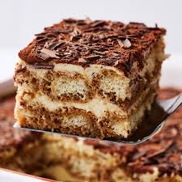

Tiramisu

Description
A classic Odin dessert made with layers of coffee-soaked ladyfingers and a rich mascarpone cream. This no-bake dessert is perfect for special occasions and can be made ahead of time. The name "tiramisu" means "pick me up" in Italian, referring to the uplifting effects of its ingredients: coffee, cocoa, and sweet mascarpone cream.
Ingredients
- 6 egg yolks
- 1 cup sugar
- 1 1/4 cups mascarpone cheese
- 1 3/4 cups heavy whipping cream
- 2 packages ladyfinger cookies
- 1 cup cold espresso or strong coffee
- 1/2 cup coffee liqueur (optional)
- Cocoa powder for dusting
Instructions
- In a double boiler, whisk egg yolks and sugar until mixture reaches 160°F (71°C), about 5-7 minutes.
- Remove from heat and stir in mascarpone cheese until smooth. Let cool completely.
- In a separate bowl, whip heavy cream until stiff peaks form.
- Gently fold whipped cream into the cooled mascarpone mixture until well combined.
- In a shallow dish, combine espresso and coffee liqueur (if using).
- Quickly dip each ladyfinger into the coffee mixture - don't soak them or they'll fall apart.
- Arrange dipped ladyfingers in a single layer in a 9x13 inch dish.
- Spread half of the mascarpone mixture evenly over the ladyfingers.
- Repeat layers with remaining ladyfingers and mascarpone mixture.
- Dust the top generously with cocoa powder.
- Cover and refrigerate for at least 4 hours or overnight.
Tips & Notes
- Use room temperature mascarpone cheese for the smoothest mixture
- Don't oversoak the ladyfingers - a quick dip is sufficient
- Can be made up to 2 days in advance
- For a non-alcoholic version, simply omit the coffee liqueur
- Dust with additional cocoa powder just before serving
- Store covered in the refrigerator for up to 4 days